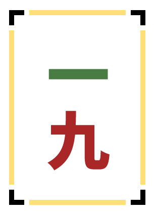
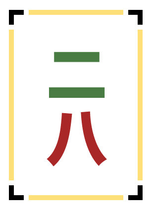
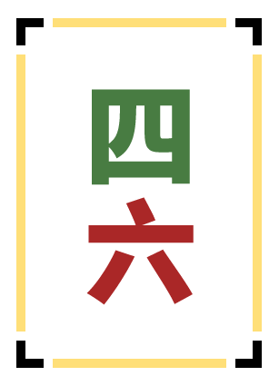
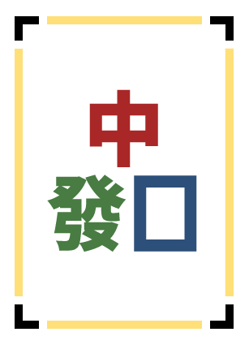
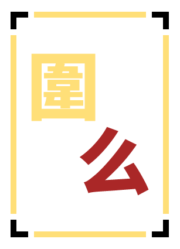
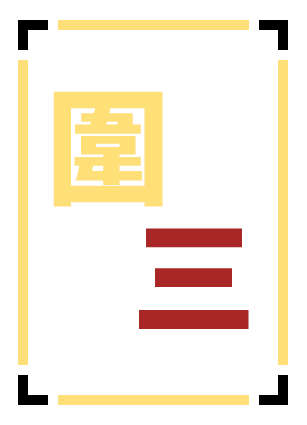

夺彩麻将规则书
夺彩麻将，由自恧发起，和雀庄的小伙伴们共同打磨的一款麻将游戏子规则，X计划的开山之作。
40 种赖子图鉴
常规赖子

可当作任意花色的1或9

可当作任意花色的2或8
可当作任意花色的3或7

可当作任意花色的4或6
可当作任意花色的1或6
可当作任意花色的2或7
可当作任意花色的3或8
可当作任意花色的4或9
可当作任意花色的1、5或9，以及東风
可当作任意花色的2或6，以及南风、红中
可当作任意花色的3或7，以及西风、發财
可当作任意花色的4或8，以及北风、白板

可当作红中、發财或白板
可当作東风、南风、西风或北风
可当作任意筒子花色的序数牌
可当作任意索子花色的序数牌
可当作任意萬字花色的序数牌
可当作任意花色的1、2或3
可当作任意花色的4、5或6
可当作任意花色的7、8或9
可当作任意花色的1或9，以及所有字牌
可当作任意花色的1、4或7
可当作任意花色的2、5或8
可当作任意花色的3、6或9
可当作任意花色的1、3、5、7或9
可当作任意花色的2、4、6或8

可当作任意花色的1、2、8或9

可当作任意花色的2、3或4
可当作任意花色的4、5或6
可当作任意花色的6、7或8
副露赖子
仅用于吃牌副露，须保持顺子；不能在手中和牌，也不能被荣和。
仅用于碰牌副露，须保持刻子；该明刻之后可以加杠。
结构型赖子
可作雀头、刻子或杠；七对子与十三幺的对子不属于雀头。
只可补顺子两面搭子缺少的任意一面。
只可作顺子中的边张或嵌张。
只可作 123 或 789 顺子中的一张。
番型赖子与皇
可见得点须达到满贯；国标须达到可见 24 番。不可副露。
可见番须为奇数；不计里宝牌。不可副露。
可见番须为偶数；不计里宝牌。不可副露。
可充当任何普通牌，无额外使用限制。
规则书原文
封面与简介
武汉云岭雀庄X计划-夺彩麻将 规则书
夺彩麻将
夺彩麻将，由自恧发起，和雀庄的小伙伴们共同打磨的一款麻将游戏子规则，X计划的开山之作。
你见过牌背颜色不统一的麻将吗？夺彩麻将，这是一款让你从摸第一张牌起，就忍不住盯着别人手牌和牌山的玩法。长着不一样牌背颜色的赖子明晃晃的摆在牌山里，馋了吗？碰一口，赖子运到手。
一共有40种各不相同的赖子。让牌局更快，博弈更密，笑声更多。
夺彩麻将即将在雀庄内正式上线！自恧在牌里加了好多料，打完一局就想再来一局。真不来试试吗？
第一篇 通用规则
第一章 对局基本设定
第一条 与平时对局有出入或值得注意的规则，文中以红字标出。
第二条 始点40000点、返点40000点，顺位点均为0、0、0、0。
第三条 对局结束条件如下：
（一）完成全部规定对局；
（二）任一玩家持点低于0点被击飞，对局结束；
（三）执行赖子置换程序时，同色待选赖子不足以补足应补枚数。
第四条 每位玩家起始持点40000点的筹码发放如下：100点筹码5枚、500点筹码1枚、1000点筹码4枚、5000点筹码3枚、10000点筹码2枚。
第五条 番数小于等于0时，和牌得点记为0点，不结算和牌点数。立直麻将中场供仍归和牌者所有。
第二章 牌张体系
第六条 夺彩麻将引入赖子牌，作为对局中的特殊牌张。每副牌组配赖子牌40枚，牌面各不相同，效果各异。血战到底规则从中剔除8枚，实际使用32枚。
第七条 赖子牌依功能分为五类：
（一）常规赖子：可当作指定范围的任意牌使用；
（二）副露赖子：仅可用于副露，不可在手牌中直接用于和牌；
（三）结构型赖子：须按特定牌型结构使用；
（四）番型赖子：须满足特定番型条件方可当作任意牌使用；
（五）皇赖子：可充当任何牌且无任何使用限制。
第八条 赤宝牌为悬赏牌，均保留原牌面对应牌种功能，其牌背颜色与赖子牌相同，均为异色牌背，作为额外的干扰牌混入牌山，玩家无法通过牌背区分赤宝牌或赖子牌。立直麻将版、国标麻将版各配5枚，分别为東、南、西、北、白各一枚。血战到底不配赤宝牌，因血战到底无“吃”这一便易运牌手段，无需额外干扰。
第九条 金宝牌、银宝牌同为悬赏牌，均保留原牌面对应牌种功能。金宝牌每张+1番、银宝牌每张-1番。三种规则均配金宝牌6枚与银宝牌6枚（金三萬、金三索、金三筒、金七萬、金七索、金七筒、银三萬、银三索、银三筒、银七萬、银七索、银七筒各一枚，即所有三七序数牌各有一枚金银宝牌）。
第三章 诈和与牌局友好原则
第十条 牌局友好原则旨在为初学者与刚接触本规则的玩家营造宽松的学习环境，非故意产生的诈和不予处罚，具体情形及处理如下：
（一）血战到底玩家因忘记定缺而误碰或误杠时，其他玩家应提醒其收回手牌，继续对局；
（二）国标玩家和牌不足8番时，将和牌立起，继续对局；
（三）立直玩家误判振听而荣和时，将和牌立起，继续对局。
牌局友好原则绝不适用于严重违反体育道德的行为。下列行为严令禁止：
（四）通牌、贿赂、赌博、寻衅滋事、威胁辱骂其他选手或工作人员；
（五）故意诈和、恶意破坏牌局秩序、篡改牌山或牌背；
（六）其他经赛事组委会认定的严重不当行为。
处罚标准：首犯禁赛，再犯终身不得进入云岭雀庄或参加由其举办的任何活动；涉嫌违法犯罪的，将报警并依法处理。
第十一条 其他玩家有义务检查和牌者是否诈和。
第四章 赖子效果与使用规则
第十二条 赖子牌的效果含义固定，不因所打麻将规则的变化而变化。
第十三条 血战到底因无字牌且不可吃牌，剔除涉及字牌与【吃】行为的8种赖子，分别为【吃】【滿貫】【東南西北】【中發白】【一五九東】【二六南中】【三七西發】【四八北白】。
第一节 常规赖子
第十四条 下列赖子牌可当作指定范围的任意牌使用：
【一九】：可当作任意花色的1或9；
【二八】：可当作任意花色的2或8；
【三七】：可当作任意花色的3或7；
【四六】：可当作任意花色的4或6；
【一六】：可当作任意花色的1或6；
【二七】：可当作任意花色的2或7；
【三八】：可当作任意花色的3或8；
【四九】：可当作任意花色的4或9；
【一五九東】：可当作任意花色的1、5或9，以及東风；
【二六南中】：可当作任意花色的2或6，以及南风、红中；
【三七西發】：可当作任意花色的3或7，以及西风、發财；
【四八北白】：可当作任意花色的4或8，以及北风、白板；
【中發白】：可当作红中、發财或白板；
【東南西北】：可当作東风、南风、西风或北风；
【筒】：可当作任意筒子花色的序数牌；
【索】：可当作任意索子花色的序数牌；
【萬】：可当作任意萬字花色的序数牌；
【小】：可当作任意花色的1、2或3；
【中】：可当作任意花色的4、5或6；
【大】：可当作任意花色的7、8或9；
【么】：可当作任意花色的1或9，以及所有字牌；
【一四七】：可当作任意花色的1、4或7；
【二五八】：可当作任意花色的2、5或8；
【三六九】：可当作任意花色的3、6或9；
【單】：可当作任意花色的1、3、5、7或9；
【雙】：可当作任意花色的2、4、6或8；
【圍幺】：可当作任意花色的1、2、8或9；
【圍三】：可当作任意花色的2、3或4；
【圍五】：可当作任意花色的4、5或6；
【圍七】：可当作任意花色的6、7或8。
第二节 副露赖子
第十五条 【吃】与【碰】仅可用于副露，不可在手牌中用于和牌；打出后不视为舍牌振听，亦不可被荣和。
（一）【吃】：手牌中的【吃】可当任意牌去参与吃牌。打出的【吃】可被下家当任意牌吃入。使用【吃】副露形成的面子，须维持顺子结构。
（二）【碰】：手牌中的【碰】可当任意牌去参与碰牌。打出的【碰】可被其他家当任意牌碰取；多人同时宣告时，按逆时针顺序距打出者最近者优先。使用【碰】副露形成的面子，须维持刻子结构。
第三节 结构型赖子
第十六条 【眼刻槓】：可当作任意雀头、刻子或明暗杠的替代牌。七对子与十三幺均为特殊和牌形，其对子不视为雀头。
第十七条 【兩面】：可视为两面搭子中的任意一张牌，即可当作该搭子所缺的任意一面。
第十八条 【偏卡】：仅可视为顺子搭子中边张或嵌张结构中的一张牌。
第十九条 【老少】：仅可当作123或789这两个顺子中的一张牌。
第四节 番型赖子
第二十条 可见番指所见和张，玩家可直接计算、无需和牌后才能确定的番数。仅有立直麻将有不可见番：里宝牌，其余均为可见番。可见番仅作为【奇番】【偶番】【滿貫】的触发条件，无其他意义。
第二十一条 【滿貫】【奇番】【偶番】均不可副露。
【滿貫】：当牌形可见番为满贯及以上时，可当作任意牌使用；
【奇番】：当牌形可见番为奇数番时，可当作任意牌使用；
【偶番】：当牌形可见番为偶数番时，可当作任意牌使用。
第二十二条 【满贯】的使用条件：
1. 立直麻将设有切上满贯规则。
2. 国标麻将中，【滿貫】赖子的触发条件为可见番大于等于24番。
3. 血战到底中，【奇番】【偶番】计算和牌番数，而非倍数。
第二十三条 使用上述的三种赖子时，可先当做任意赖子来计算听牌。当看到和牌张时，先确认当前可见番是否满足其生效条件。若满足条件，则和牌成立；若不满足，则该赖子无法当做任意牌使用，为废张，不可和牌，需改善手牌来增减可见番达成和牌条件。
第五节 皇赖子
第二十四条 【皇】真真正正的赖子，无任何使用限制。
《赖皇行》——自恧
君不见牌山兮巍巍起四方，中有真皇兮镇八荒。
不将颜色分贵贱，岂以牌背定弱强。
筒条万随吾点将，风箭字列队称王。
食则宾邦副露，和则点棒duangduang。
任尔千番没和着，朕持一皇镇全场。
真赖无二，大道归皇。
第六节 赖子使用通则
第二十五条 赖子牌基本性质：
（一）所有赖子牌均可打出；
（二）除【奇番】【偶番】【滿貫】外，其余赖子牌均可参与副露；
（三）赖子牌所代替的牌张视为真牌，赖子牌不能解释为金宝牌、银宝牌或赤宝牌，仅可解释为对应普通牌张；
（四）玩家宣告和牌后，可自由解释手牌及副露区中赖子牌；解释须构成有效和牌牌型，且不得违反各赖子的固有使用限制；
（五）赖子牌参与副露后，加杠、胡牌判定时可依有效和牌牌型重新解释，不受当初宣告的副露类型限制。
例如：上家打【中】，玩家虽以5萬与【皇】喊“吃”，副露为【中】5萬【皇】；但胡牌时仍可将该副露整体解释为5萬刻子（【皇】=5萬，【中】=5萬），不受当初“吃”宣告限制。由于顺子不能被加杠，故加杠后，该副露只能解释为刻子。由于血战麻将没有吃，故在血战麻将里所有副露均只能解释为刻子。
第二十六条 使用【吃】赖子牌副露形成的顺子，须维持顺子结构，不得重释为刻子，亦不可加杠；使用【碰】赖子牌副露形成的明刻，须维持刻子结构，之后可向该明刻加杠。
第二十七条 赖子自由解释与限定：
（一）手牌中的赖子牌在和牌前，可当任意符合其效果的牌使用；
（二）向明刻或明杠加杠时，加杠赖子牌须与加杠对象所代表牌一致；加杠后，该副露整体结构须与最终解释一致。
第二十八条 部分赖子牌不可用于明杠、暗杠或补杠：
（一）【奇番】【偶番】【滿貫】不可进入副露区，更不可用于杠；
（二）【吃】【碰】仅可在副露宣告时使用，该牌不可用于暗杠、大明杠、加杠；但以【碰】副露形成的明刻，之后可向该明刻加杠；以【吃】副露形成的顺子，须维持顺子结构，不得重释为刻子；
（三）【兩面】【偏卡】【老少】仅能用于顺子面子；
（四）除前三款外，其余赖子牌均可用吃、碰、杠。
第二十九条 赖子牌所代替的牌张视为真牌。赖子牌按某牌面解释时，若该牌面与手牌中其他牌组成4张及以上相同牌时，共计入根数。玩家宣告荣和或自摸后，可自由解释手牌及副露区中赖子牌；解释须构成有效和牌牌型，且不得违反各赖子的固有使用限制。
例如：在血战到底中，副露区：【一四七】一筒【皇】，手牌中还有3枚一筒，此时会记6根。
第五章 开局与终局处理
第三十条 麻将机内同时存放两副牌组，牌背颜色分别为红色与蓝色。每副牌组以常规麻将136枚牌张为基础（血战到底版以108枚数牌为基础）。
第三十一条 每副牌组配赖子牌40枚，牌背颜色与本副牌组相同。每局开始前，立直麻将版与国标版从40枚中随机抽取8枚，血战到底版从32枚中随机抽取6枚，掺入另一副牌组牌山；剩余赖子置于场外，作为该副牌组待选赖子。待选赖子不参与牌山洗牌，仅用于补充对局中取出的同色赖子。由于是随机加入的赖子，玩家也应当不知道下局游戏加入了哪些赖子。
第三十二条 异色牌背牌张未翻开前。玩家仅能观察到异色牌背牌张的存在及数量，无法辨认其具体为赤宝牌或赖子牌。
第三十三条 两副牌组分别洗牌，不混合洗牌。
第三十四条 每局对局开始前，两副牌组须同时完成准备：将牌组A的赖子与赤宝牌（如有）掺入牌组B牌山；牌组B同理。两副牌组剩余赖子按同色码放于牌桌外，作为待选赖子牌堆。两副牌组均完成洗牌码牌后，对局开始。
第三十五条 两副牌组交替使用。第一局使用先完成洗牌的牌组，第二局使用另一牌组。第一局结束后，将第一牌组推入麻将机洗牌，麻将机推出第二牌组供第二局使用。以此类推，交替循环。
第三十六条 每局对局终了后，须执行赖子置换程序。由靠近待选赖子牌堆的玩家指导大家执行，按下列顺序进行：
（一）全体玩家亮出各自手牌；
（二）玩家各自取出手牌、牌河及副露区中所有已显露的赖子牌；
（三）共同确认取出赖子的数量与其牌背颜色；
（四）从与取出赖子同色的待选赖子中，随机抽取同数量赖子补入牌山，并确认补入完成。
（五）牌山中尚未被摸到的异色牌背的牌，玩家不得故意掀开查看。
第六章 行牌通用规则
第三十七条 打出一张牌而有多名玩家同时宣告时，荣和最优先；无人荣和时，碰、杠同时按逆时针顺序适用头跳。吃牌最后处理。
第三十八条 杠上杠规则如下：
（一）已副露的牌可解释成明刻，若摸到可当作该牌使用的牌，可补杠；手牌中有可解释为某牌的暗刻，若摸到可当作该牌使用的牌，可开暗杠；
（二）四张杠形成后，若又摸到该牌或可当作该牌使用的牌，可继续补杠，形成五杠；六杠、七杠同理，以此类推；
（三）补杠须逐张进行，不得将多张牌同时加杠以直接形成五杠或更高次数杠；
（四）明刻、明杠加杠时可被抢杠；暗杠形成及暗杠加杠时均不可被抢杠；
（五）以赖子牌向明刻或明杠加杠时，听该赖子牌所可解释任一张面者，均可宣告抢杠；向暗杠加杠时，不可抢杠。
第三十九条 暗杠摆放规则如下：
（一）国标麻将与血战到底：宣告暗杠时，玩家需自行检查四张牌一致后，四张全暗置扣下。向暗杠加杠时，加杠牌于暗杠牌列最右端；向明杠加杠时，明置加杠牌于明杠牌列最右端。对局结束后需查暗杠。副露区在左侧。
（二）立直麻将：宣告暗杠时，须先将四张牌全部明置供其他玩家知悉，再将左右两端暗置、中间两枚明置。当暗杠牌中含金宝牌、银宝牌、赤宝牌或赖子牌时，特殊牌优先置于中间明置位；由三枚特殊牌与一枚普通牌组成时，仅最左侧一枚暗置，其余三枚明置；若均为特殊牌时，则全部明置。向暗杠或已有的明四杠继续加杠时，先展示要加杠的牌，再将加杠牌明置于该杠牌列左端。副露区在右侧。
第七章 注意事项
第四十条 【兩面】【偏卡】【老少】不适用组合龙中的顺子，更不适用于全不靠、七星不靠。
第四十一条 国标麻将中，无论是几杠的明杠或暗杠，明杠都只算明杠、暗杠都只算暗杠。五杠及以上不额外加番。
第四十二条 虽然赖子牌可代替真牌使用，但胡绝张的判定仍以该牌余牌为准，赖子充当该牌后并不会减少该牌的枚数。
第二篇 夺彩麻将-立直麻将
第八章 立直基础设定
第四十三条 基础设定如下：
·以雀庄公式战规为基础，本规则书有特别规定者，从其规定；
·四人麻将，东南战、有食断，有后付，有食替；
·有头跳，有切上满贯，无听牌终局，无和牌终局；
·五枚赤宝、六金六银、八赖子；
·有里宝、有杠宝、有杠里宝；仅四张杠形成时即开宝牌；
·四暗刻单骑、大四喜、国士无双十三面、纯正九莲宝灯仅计一倍役满；有复合多倍役满，有累计役满。大三元、大四喜、四杠子包牌；大明杠杠开包牌；
·每个纯赖子明杠计一倍役满、每个纯赖子暗杠计两倍役满（非役种）；
·连风雀头计4符；
·允许无自摸巡目时立直，流局终局时，场供中立直棒归一位所有。
第四十四条 本规则允许食替。玩家可任意吃取上家、碰取其他家打出的牌，并自由选择打出任意手牌，不受立直麻将食替禁止规则限制。
第四十五条 立直麻将每副牌组使用136枚常规牌张（内含12枚金银宝牌、5枚赤宝牌），配赖子牌8枚，共计144枚。
第九章 特殊规则
第四十六条 振听规则按本雀庄公式战通用规则处理。
第四十七条 赖子牌的振听判定如下：
（一）打出赖子后，视为打出了该牌可能解释的所有牌面。若玩家所听牌中包含其中任一牌面，即进入舍牌振听。
（二）打出【奇番】【偶番】【满贯】后，若和牌者可作一种有效解释，使番数奇偶性或打点与该牌不符，则不构成舍牌振听；若一切有效解释的番数奇偶性均只能与该牌相符，则构成舍牌振听，若荣和按第十条处理。
（三）立直后，若其他玩家打出 【奇番】【偶番】【满贯】，立直家只要能和牌却见逃，则构成立直振听（同巡振听同理）。
（四）当其他玩家打出的牌不可和牌时，不构成振听，此前打出的牌亦不可追溯。
极端情况举例：当前听牌形为平和听36筒，下家打出【偶番】，此时仅平和1番（奇数），偶番不生效，故不产生振听。此时对家打出银3筒，可和牌，因下家打出的【偶番】本身不可和牌，并不造成振听。
极端情况举例：当前牌形为【偶番】22m333456s2367p听1458p，立直后，下家一发巡打出8p ，尽管可以通过将【偶番】解释为4p，牌形为立直一发断幺攻三番（奇数）【偶番】不生效。但若将【偶番】解释为1p，则牌形为立直一发两番（偶数），【偶番】生效，可以和牌。故只要存在一种有效解释使该赖子生效，立直家若见逃，即构成立直振听。
第四十八条 四张杠形成时即开宝牌，并从岭上补入一张牌。杠宝指示牌仅四张杠形成时翻开；产生五杠及以上的杠时不再新增宝牌指示牌，补牌从牌山顺摸一张。岭上开花番种名改为杠上开花，因不一定是从岭上杠开和牌。
第四十九条 五杠及以上杠牌符数，按立直麻将明杠或暗杠对应符数为基准，每增加一张牌组成的杠，符数再翻倍一次。
例如：五杠明杠中张16符、幺九32符，五暗杠中张32符、幺九64符；六杠明杠中张32符、幺九64符，六暗杠中张64符、幺九128符；七杠及以上以此类推。
第十章 计分
第五十条 立直麻将计分方法与公式战一致。
第五十一条 赤宝牌、金宝牌均+1番；银宝牌-1番。
第五十二条 当宝牌指示牌本身为赖子牌时，该指示牌不指示任何具体牌张，仅触发以下效果：所有赖子牌均各计1番。赖子牌按某牌面解释时，若该牌面为宝牌，计入该宝牌；并因指示牌为赖子，同时计入赖子宝牌。
第五十三条 除累计役满外，役满成立时不再计算其他役种与宝牌。役满按13番计，N倍役满按13×N番计。
第五十四条 一发、门前清自摸和、表宝牌、金银赤宝牌均为可见番；和牌时仅里宝牌数不定，不计入可见番。【奇番】【偶番】【满贯】的判定条件仅为可见番。
第三篇 夺彩麻将-国标麻将
第十一章 国标基础设定
第五十五条 基础设定如下：
·以1998年国家体育总局颁布的《中国麻将竞赛规则》为基础，本规则书有特别规定者，从其规定；
·四人麻将，全庄战，轮庄制，有击飞；
·去掉花牌；
·每个纯赖子明杠计64番、每个纯赖子暗杠计88番（不计入起和番）。
第五十六条 国标麻将版每副牌组使用136枚常规牌张（内含12枚金银宝牌、5枚赤宝牌），配赖子牌8枚，共计144枚。
第十二章 计分
第五十七条 底分为100点。
第五十八条 赤宝牌、金宝牌、银宝牌为悬赏番，不计入起和番数，但计入【奇番】【偶番】【滿貫】的判断。赤宝牌每张+1番，金宝牌每张+1番，银宝牌每张-1番。
第四篇 夺彩麻将-血战到底
第十三章 血战基础设定
第五十九条 基础设定如下：
·以竞技麻将竞赛规则—血战到底（SBR）2025为基础；本规则书有特别规定者，从其规定；
·四人麻将，全庄战，轮连庄制，有击飞；
·六金六银、六赖子，无赤宝牌；
·点大明杠杠开包牌；
·血战到底：一家和牌后牌局继续，直至三家和牌或流局；
·每个纯赖子明杠计6番、每个纯赖子暗杠计7番；
·和牌或杠牌时直接结算点数；
·封顶6番64倍；若手牌与副露牌中无赖子牌，破封至7番（计100倍）。
第六十条 为避免“风水”问题，采用与国标麻将相同的坐庄、迁风换座规则。
第六十一条 新增了较多顺子番平衡整体规则，见第七十九条。
第六十二条 血战到底每副牌组使用萬子、筒子、索子三种花色的数牌，共108枚（包含12枚金银宝牌）；另从32枚赖子牌中随机加入6枚，共计114枚。
第六十六条 赖子牌32枚，从40种中剔除以下8种：【吃】、【滿貫】、【東南西北】、【中發白】、【一五九東】、【二六南中】、【三七西發】、【四八北白】。每局开始前，从剩余32枚中随机抽取6枚掺入牌山；剩余26枚置于场外，作为待选赖子。
第十四章 特殊规则
第六十三条 定缺：和牌时手牌中只允许有至多两种花色的牌。选手拿到起手牌换三张后，必须决定不要哪一种花色。也不允许碰、杠、和这种花色的牌。
第六十四条 定缺行为模式：四家将确定不要的花色定缺卡面朝下扣置于己方面前，由庄家发令后统一翻开，以此消除先后定缺的信息差。
第六十五条 换三张：每副牌开局起牌后、定缺前，四家各自选出三张同色牌（所有赖子无论其含义均可充当填充牌），按下列程序执行：
（一）四家各自将选出的三张同色牌牌面朝下，扣置于己方面前；
（二）由庄家再按一次骰子盘的按钮，掷出两颗骰子；
（三）依两颗骰子点数决定交换方向：
1. 两颗骰子点数相同，与对家交换；
2. 两颗骰子点数之和为奇数，顺时针交换；
3. 两颗骰子点数之和为偶数，逆时针交换；
（四）方向确定后，四家同时将扣置的三张牌推向对应方向的玩家；交换完成后，将所得三张牌收入手牌。
第六十六条 点杠包牌：若某选手点明杠后，开杠者随即杠开和牌，则点杠者须承担该次和牌的全部支付责任。
第十五章 和牌与终局
第六十七条 一家和牌后，牌局继续，直至三家和牌或流局。
第六十八条 和牌者不再参与其和牌后本副牌剩余的行牌过程。
第六十九条 可一炮多响：某选手打出一张牌，多名选手满足和牌条件的，均有权利和牌。
第七十条 和牌后的行牌次序：某选手和牌后，从其下家开始，未和牌者依次行牌；一炮多响的，从点炮者起，按逆时针顺序，最后一个和牌者的下家开始行牌。
第七十一条 花猪：对局结束时，若打过未定缺的牌，且最后手牌中仍持有已确定不要的缺门花色的玩家，称为主动花猪。花猪向牌局没有和牌的每位选手各支付30倍底分。若全程只打定缺牌，且最后手牌中仍持有已确定不要的缺门花色的玩家，称为天命花猪，不受花猪惩罚。
第七十二条 流局时另须查大叫：未听牌者向听牌者支付可能和牌之最大番型的点数（不计金银宝牌）。某玩家同时被查大叫与花猪时，只执行花猪，就算查大叫罚点大于花猪给点，仍只按花猪点数支付，即主动花猪3000点，天命花猪0点。
例如：A听9番（有赖子），B已和牌，C未听牌，D主动花猪。C被查大叫，给A64倍（封顶）；D给AC各30倍。
第十六章 番种
第七十三条 血战到底版采用番数制计分，基础番数为0番。多个番种同时成立时，番数相加，最终倍数为2的番数次方。
例如：手牌成立对对和1番、三暗刻2番，另有金宝牌2枚、银宝牌1枚，则总番数为1+2+2-1=4番，倍数为2^4=16倍。上述番种组合后总番数超过6番时，按封顶6番计算；当手牌与副露区均无赖子牌时，此时封顶为7番（计100倍），当仅和牌张为赖子时，仍是7番封顶。
第七十四条 根体系：每有4张相同牌称为4根，以此类推。根之番数：
4/5根1番、6根2番、7根3番、8根4番、9根5番，以此类推，每多1根加1番。
例如：已碰出3萬形成明杠，手牌中另有1张3萬，同时手牌中的赖子【三六九】也解释为3萬，合计6张，计6根。
第七十五条 各番种及其番数如下：
基础番种：
对对和1番、金钩钓2番、七对子2番、清一色2番、带幺九2番
杠上开花1番、海底捞月1番、杠上炮1番、抢杠1番、天和4番、地和4番
对、刻系番种：
三暗刻2番、四暗刻4番、三连刻2番、四连刻4番
双同刻1番、双双同刻4番
顺子系番种：
老少副1番、清龙2番、一色三步高2番、一色四步高4番
镜同和2番、两杯口3番
序数番种：
全小2番、全中2番、全大2番、全将2番、全双2番、全单1番
第七十六条 不计关系：
金钩钓不计对对和
四暗刻不计对对和、三暗刻；
四连刻不计对对和、三连刻；
双双同刻不计对对和、双同刻；
清龙不计老少副；
一色四步高不计一色三步高、老少副；
第七十六条 番种牌例解析：
对对和（1番）
【定义】和牌由4副刻子与1副雀头构成。
【牌例】手牌111444p777888s2s 和牌2s
金钩钓（2番）
【定义】手牌仅剩单张时和牌。
【牌例】2p暗杠 3p碰上家后加杠 5p碰对家 8s碰下家 手牌6s 和牌6s
七对子（2番）
【定义】和牌由7个对子构成。
【牌例】手牌113344p557788s11s 和牌1s
清一色（2番）
【定义】和牌时全部序数牌为同一花色。
【牌例】手牌123234567678p4p 和牌4p
带幺九（2番）
【定义】和牌时每副面子及雀头均含有1或9。
【牌例】手牌111123p789999s1s 和牌1s
天和（4番）
【定义】庄家起手牌即已和牌。
【牌例】（偶然番，无固定牌型）
地和（4番）
【定义】闲家第一轮摸牌后成和，且无人鸣牌。
【牌例】（偶然番，无固定牌型）
杠上开花（1番）
【定义】开杠后顺摸牌墙下一张牌成和。
【牌例】（偶然番，无固定牌型）
海底捞月（1番）
【定义】牌山余牌为0时的最后一轮和牌，可以是自摸或放铳。
【牌例】（偶然番，无固定牌型）
杠上炮（1番）
【定义】他人开杠后打出一张牌，以此牌成和。
【牌例】（偶然番，无固定牌型）
抢杠（1番）
【定义】他人向明刻加杠时，抢该杠牌成和。
【牌例】（偶然番，无固定牌型）
三暗刻（2番）
【定义】和牌中含有3副暗刻。
【牌例】手牌111123444p777s5p 和牌5p
四暗刻（4番）
【定义】和牌中含有4副暗刻。
【牌例】手牌111444p777222s5p 和牌5p
三连刻（2番）
【定义】同一花色含有三副序数连续的刻子。
【牌例】手牌111222333p567s4s 和牌4s
四连刻（4番）
【定义】同一花色含有四副序数连续的刻子。
【牌例】手牌111222333444p6s 和牌6s
全小（2番）
【定义】和牌时所有序数牌均为1、2、3。
【牌例】手牌111123p123222s3p 和牌3p
全中（2番）
【定义】和牌时所有序数牌均为4、5、6。
【牌例】手牌444456p456555s6p 和牌6p
全大（2番）
【定义】和牌时所有序数牌均为7、8、9。
【牌例】手牌789888p789999s7p 和牌7p
全将（2番）
【定义】和牌时所有序数牌仅为2、5、8。
【牌例】手牌225588p225588s5p 和牌5p
全单（1番）
【定义】和牌时所有序数牌均为1、3、5、7、9。
【牌例】手牌335577p335577s9p 和牌9p
全双（2番）
【定义】和牌时所有序数牌均为2、4、6、8。
【牌例】手牌22446688p2244s6s 和牌6s
双同刻（1番）
【定义】和牌中含有两副序数相同、花色可同可异的刻子。
【牌例】手牌333456p333789s6p 和牌6p
双双同刻（4番）
【定义】四副面子恰好形成两组双同刻。
【牌例】手牌444444999p999s2p 和牌2p
一色三步高（2番）
【定义】和牌中含有一种花色3副依次递增一位或二位的顺子。
【牌例】手牌123345567p222s4p 和牌4p
一色四步高（4番）
【定义】和牌中含有一种花色4副依次递增一位或二位的顺子。
【牌例】手牌123234345456p7s 和牌7s
清龙（2番）
【定义】和牌中含有一种花色的123、456、789三副顺子。
【牌例】手牌123456789p111s4s 和牌4s
老少副（1番）
【定义】同一花色含有123与789两副顺子。
【牌例】手牌123789p234567s4p 和牌4p
镜同和（2番）
【定义】和牌由两种花色各两副对应序数完全相同的四副面子，搭配任意雀头构成。
【牌例】手牌234234p234234s6p 和牌6p
两杯口（3番）
【定义】四副面子恰好形成两组完全相同的顺子。
【牌例】手牌123123p567567s8p 和牌8p
第十七章 计分
第七十七条 底分100，基础倍数为2^番数。封顶6番计64倍，和牌时手牌与副露区无赖子牌，封顶为7番（计100倍）。
第七十八条 和牌结算：
（一）基本分=底分×倍数；
（二）自摸和：和牌者向未和牌者每人收取基本分（自摸不加倍）；
（三）点炮和：和牌者向点炮者收取基本分；
（四）一炮多响：各和牌者分别与点炮者结算。
第七十九条 金宝牌、银宝牌为悬赏牌。金宝牌每张+1番，银宝牌每张-1番。
第五篇 夺彩麻将-血河
第十八章 血河基础设定
第八十条 基础设定如下：
·以夺彩麻将·血战到底为基础；本篇章有特别规定者，从其规定；
·血流成河：一家和牌后牌局继续，直至牌山耗尽或淘汰三名玩家；
·底分36000，每人起始持点2亿；
·有击飞，持点低于0点者被淘汰；
·全庄战、轮连庄制、定缺、换三张、点杠包牌、花猪、金宝牌、银宝牌、暗杠摆放均同血战到底。
·封顶9番512倍；若手牌与副露牌中无赖子牌，破封至10番（计1024倍）。
第十九章 血河特殊规则
第八十一条 血流成河：
·一家和牌后牌局继续，该玩家进入已和牌状态；
·已和牌状态下可摸牌、打牌、加杠、明杠、和牌、点炮，不可碰牌；
·遇可开杠的牌时，若开杠后仍可听牌，则允许开杠，听牌范围可变化；
·和牌或杠牌时直接结算点数。
第八十二条 赖子杠：
·玩家可将手牌中的赖子牌直接置入副露区，称为赖子杠；
·赖子杠后从牌墙补入一张牌，可触发杠上开花；
·赖子杠后，该赖子不视为在手中；
·玩家亦可选择将赖子牌正常打出，其他玩家可照常吃、碰。
第八十三条 玩家每有一个赖子杠，该玩家每次和牌结算时的点数收支增减1番（计封顶），赖子杠加成仅作用于和牌结算，不影响刮风下雨。
例如：自己有2个赖子杠，下家自摸9番硬和，此时你需支付10番（硬和封顶为10番）
第八十四条 当和牌时手牌与副露区均无赖子牌（不含赖子杠），计硬和1番。
第八十五条 调整和牌后的行牌顺序：吃胡后由点炮玩家的下家摸牌。
第八十六条 击飞：当持点低于0点者被淘汰；本局剩余玩家继续行牌至结束；被淘汰者不再参与点数收支，也无法摸牌打牌。
第八十七条 报番：已和牌状态下每和牌一次，须报出和牌的最高番种名及总番数；
例如：手牌同时计一色四步高4番、清一色2番、四根1番，总番7番，应报“一色四步高，7番”。
第二十章 血河番型
第八十八条 计分与番种均沿用血战到底全部番种，番数不变；
第八十九条 新增番型：
硬和1番：和牌时手牌与副露区均无赖子牌；
自摸1番：自摸成和。
第六篇 附录与QA
第二十一章 三版赖子可用性总对照表
各版可用赖子一览：
立直麻将：40种全可用。
国标麻将：40种全可用。
血战到底：32种可用，剔除【吃】、【滿貫】、【東南西北】、【中發白】、【一五九東】、【二六南中】、【三七西發】、【四八北白】。
夺彩血河：32种可用，剔除【吃】、【滿貫】、【東南西北】、【中發白】、【一五九東】、【二六南中】、【三七西發】、【四八北白】。
第二十二章 三版计分方式速查
立直麻将：不变。
国标麻将：底分100。
血战到底：底分100，倍数为2^番数，封顶6番计64倍，手牌+副露均无癞子破封7番计100倍，仅和牌张为赖子也破封。自摸不加底。
夺彩血河：底分36000，倍数为2^番数，封顶9番计512倍，手牌+副露均无癞子（赖子杠除外）破封10番计1024倍，仅和牌张为赖子也破封。自摸+1番。
顺位点：0，0，0，0。鼓励大家多和牌。
第二十三章 QA
Q1：要不要所有规则都有硬胡+1番？
A：没必要，赖子没有那么强。
Q2：我赖子去哪儿了？
A：在别人手里，或者牌山里。这赖子都明“摆”着呀。
大家若还有对规则有疑问的地方请联系自恧（Q：603651457）